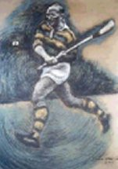

Christy Ring Famous Cork Legend
Index
Christy Ring (Cork) - In a game as mythologised as hurling, Ring's universally accepted pre-eminence is remarkable. Yet he possessed everything from talent and ferocious application to longevity and a string of records, including eight All-Ireland medals. Obsessive about the game, he worked relentlessly to sustain a formidable array of techniques, complemented by great vision and anticipation. A shamanistic sense of his own distinctness added to a reputation for eccentricity, but Ring's greatness also demoralised opponents. Physically resilient and resourceful, he played senior inter-county between 1939-63.
